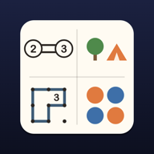

Logic Grids / MřížkyCalm classic logic puzzlesTerms of Use
Logic Grids (Mřížky) · effective 25 October 2026 · operator: deriverge s.r.o. · contact: info@deriverge.com
These terms apply to the Logic Grids game (Mřížky in Czech, Logikgitter in German), listed in the stores as Logic Puzzles: Hashi & Tents. By installing or playing it, you agree to them. Short version: the game is free with ads, purchases are optional and one-time, and coins are only for fun: they have no money value and cannot be bought or sold.
1. What Logic Grids is
Logic Grids is a collection of four classic logic puzzles for phones: Hashi (Bridges), Tents and Trees, Slitherlink and Binairo (Takuzu). It includes levels, daily puzzles and free play. It is provided by deriverge s.r.o. (“we”).
2. Licence to use
We grant you a personal, non-exclusive, non-transferable licence to use Logic Grids on devices you own or control, for your own non-commercial entertainment, under these terms and the rules of the store you downloaded it from. The game, its puzzles, design, graphics, sounds and code remain ours. You may not copy, modify, sell or reverse engineer the game, except where the law allows it.
3. Ads
Logic Grids is free and is funded by ads served by Google AdMob. Ads appear only between puzzles, never when the app starts or in the middle of a puzzle, and not during your first 8 solved puzzles. Rewarded ads, which give you a hint or coins, appear only when you choose to watch one. Ads are provided by third parties; we do not control their content and are not responsible for the products or services they advertise. How ads use data is described in the privacy policy.
4. One-time purchases
- Logic Grids offers optional in-app purchases: Remove ads, which removes the ads between puzzles, and the Supporter pack, which removes those ads and unlocks every theme right away. Rewarded ads stay available after either purchase, but only when you ask for one.
- Both are one-time, non-consumable purchases. They are not subscriptions and are never charged again. The price is shown in the app before you buy.
- Payment is charged to your Apple Account or Google Play account and is processed by Apple or Google under their own terms.
- If you reinstall the app or change your phone, use Restore purchases with the same Apple Account or Google account. Purchases do not carry over between iPhone and Android.
- Refunds are handled by Apple or Google under their own rules. We cannot issue refunds ourselves.
5. Coins and themes
- Coins are a virtual in-game currency. They have no monetary value, are not your property and are not a means of payment.
- Coins cannot be bought with real money, cannot be exchanged for money or anything of value outside the game, and cannot be transferred to another person.
- You earn coins only inside the game: by solving puzzles and, if you choose, by watching a rewarded ad. Every reward is a fixed, known amount.
- You can spend coins on themes and on extra hints. Themes change only how the game looks.
- The game has no gambling, no loot boxes and no paid rewards with random content.
- Coins and unlocked themes are stored only on your device. They are lost if you reset your progress or uninstall the app, and we cannot restore them. Themes included in the Supporter pack can be restored with the purchase.
6. Your progress
Your progress is stored only on your device (see the privacy policy). If you uninstall the app or lose your device, your progress is gone and we cannot recover it. Purchases can be restored.
7. Acceptable use
Please play fairly. You must not:
- modify, hack or tamper with the game, or use tools to get coins, themes or purchases without earning or paying for them;
- get around the ads or purchases in a way the game does not offer;
- generate fake ad views or clicks, or otherwise defraud advertisers or the stores;
- use the game in a way that breaks the law or the rules of the store you downloaded it from.
If you break these rules, we may stop supporting your use of the game where the law allows it.
8. Availability
Logic Grids is provided “as is” and “as available”. We work to keep it reliable, but we do not promise that it will be free of errors, always available or suitable for every purpose. Ads and purchases depend on third-party services that we do not control. We may improve and change the game over time, including its puzzles, themes and coin prices.
9. Limitation of liability
To the extent the law allows, deriverge s.r.o. is not liable for lost profit, lost data or progress, or indirect or consequential damage arising from the use of Logic Grids or from being unable to use it. Nothing in these terms limits liability that cannot be limited by law, or your mandatory rights as a consumer.
10. App Store downloads
If you downloaded Logic Grids from the App Store, Apple's Licensed Application End User License Agreement (Standard EULA) also applies. These terms apply alongside it; if they conflict, the Standard EULA prevails for App Store downloads.
11. Governing law
These terms are governed by the law of the Czech Republic. If you are a consumer, you also keep the protection of the mandatory rules of the country where you live.
12. Changes
We may update these terms. The current version is always on this page, with its effective date. If you keep playing Logic Grids after a change, the new terms apply.
13. Contact
deriverge s.r.o., info@deriverge.com. For help with the game, see Support.
Podmínky použití
Mřížky · účinné od 25. října 2026 · provozovatel: deriverge s.r.o. · kontakt: info@deriverge.com
Tyto podmínky platí pro hru Mřížky (anglicky Logic Grids, německy Logikgitter), která je v obchodech uvedená jako Mřížky: logické hádanky. Instalací nebo hraním s nimi souhlasíte. Krátká verze: hra je zdarma s reklamami, nákupy jsou dobrovolné a jednorázové a mince jsou jen pro radost: nemají peněžní hodnotu a nedají se koupit ani prodat.
1. Co jsou Mřížky
Mřížky jsou sbírka čtyř klasických logických hádanek pro telefony: Hashi (mosty), Stany a stromy, Slitherlink a Binairo (Takuzu). Obsahují úrovně, hádanky dne a volnou hru. Hru poskytuje deriverge s.r.o. („my“).
2. Licence k používání
Udělujeme vám osobní, nevýhradní a nepřevoditelnou licenci používat Mřížky v zařízeních, která vlastníte nebo máte pod kontrolou, pro vlastní nekomerční zábavu, podle těchto podmínek a pravidel obchodu, ze kterého jste hru stáhli. Hra, její hádanky, vzhled, grafika, zvuky a kód zůstávají naše. Hru nesmíte kopírovat, upravovat, prodávat ani zpětně analyzovat, pokud to nedovoluje zákon.
3. Reklamy
Mřížky jsou zdarma a financují je reklamy, které poskytuje Google AdMob. Reklamy se objevují jen mezi hádankami, nikdy po spuštění aplikace ani uprostřed hádanky a během vašich prvních 8 vyřešených hádanek vůbec. Reklamy s odměnou, za které dostanete nápovědu nebo mince, se zobrazí, jen když se je sami rozhodnete zhlédnout. Reklamy dodávají třetí strany; jejich obsah neovlivňujeme a neodpovídáme za výrobky ani služby, které nabízejí. Jak reklamy pracují s daty, popisují zásady ochrany soukromí.
4. Jednorázové nákupy
- Mřížky nabízejí volitelné nákupy v aplikaci: Bez reklam, který odstraní reklamy mezi hádankami, a Balíček podporovatele, který tyto reklamy odstraní a hned odemkne všechny motivy. Reklamy s odměnou zůstanou po obou nákupech k dispozici, ale jen když o ně sami požádáte.
- Oba nákupy jsou jednorázové a trvalé. Nejde o předplatné a nic se vám znovu neúčtuje. Cenu uvidíte v aplikaci ještě před nákupem.
- Platba se strhává z vašeho účtu Apple nebo Google Play a zpracovává ji Apple nebo Google podle svých podmínek.
- Pokud hru přeinstalujete nebo změníte telefon, použijte Obnovit nákupy se stejným účtem Apple nebo Google. Nákupy se nepřenášejí mezi iPhonem a Androidem.
- O vrácení peněz rozhoduje Apple nebo Google podle svých pravidel. My sami peníze vracet nemůžeme.
5. Mince a motivy
- Mince jsou virtuální herní měna. Nemají peněžní hodnotu, nejsou vaším majetkem a nejsou platebním prostředkem.
- Mince nelze koupit za skutečné peníze, nelze je vyměnit za peníze ani za nic jiného hodnotného mimo hru a nelze je převést na jinou osobu.
- Mince získáváte jen ve hře: za vyřešené hádanky a, pokud chcete, za zhlédnutí reklamy s odměnou. Každá odměna má pevnou, předem známou výši.
- Mince můžete utratit za motivy, které mění jen vzhled hry, a za další nápovědy.
- Hra neobsahuje hazard, truhly s překvapením (loot boxy) ani placené odměny s náhodným obsahem.
- Mince a odemčené motivy jsou uložené jen ve vašem zařízení. Pokud smažete postup nebo hru odinstalujete, přijdete o ně a obnovit je nemůžeme. Motivy, které jsou součástí Balíčku podporovatele, obnovíte spolu s nákupem.
6. Váš postup
Váš postup je uložený jen ve vašem zařízení (viz zásady ochrany soukromí). Pokud hru odinstalujete nebo zařízení ztratíte, postup je pryč a obnovit ho nemůžeme. Nákupy obnovit můžete.
7. Pravidla férového hraní
Hrajte prosím férově. Nesmíte:
- hru upravovat, hackovat nebo do ní zasahovat ani používat nástroje, kterými byste získali mince, motivy nebo nákupy, aniž byste si je vyhráli nebo zaplatili;
- obcházet reklamy nebo nákupy jinak, než jak hra nabízí;
- vytvářet falešná zobrazení nebo klepnutí na reklamy ani jinak podvádět inzerenty nebo obchody;
- používat hru způsobem, který porušuje zákon nebo pravidla obchodu, ze kterého jste ji stáhli.
Pokud tato pravidla porušíte, můžeme v rozsahu, který zákon dovoluje, přestat vaše používání hry podporovat.
8. Dostupnost
Mřížky poskytujeme „tak, jak jsou“ a „podle dostupnosti“. Snažíme se, aby hra fungovala spolehlivě, ale neslibujeme, že bude bez chyb, vždy dostupná nebo vhodná pro každý účel. Reklamy a nákupy závisí na službách třetích stran, které neovlivňujeme. Hru můžeme postupně vylepšovat a měnit, včetně hádanek, motivů a cen v mincích.
9. Omezení odpovědnosti
V rozsahu, který zákon dovoluje, neodpovídá deriverge s.r.o. za ušlý zisk, ztrátu dat nebo herního postupu ani za nepřímé nebo následné škody vzniklé používáním Mřížek nebo tím, že je nebylo možné používat. Nic v těchto podmínkách neomezuje odpovědnost, kterou podle zákona omezit nelze, ani vaše zákonná práva spotřebitele.
10. Stažení z App Store
Pokud jste Mřížky stáhli z App Store, platí také licenční smlouva Apple s koncovým uživatelem (Standard EULA). Tyto podmínky platí vedle ní; pokud by si odporovaly, má u stažení z App Store přednost Standard EULA.
11. Rozhodné právo
Tyto podmínky se řídí právem České republiky. Pokud jste spotřebitel, zůstává vám i ochrana, kterou poskytují kogentní předpisy země, kde žijete.
12. Změny
Tyto podmínky můžeme aktualizovat. Aktuální verze je vždy na této stránce i s datem účinnosti. Pokud po změně Mřížky dál hrajete, platí nové podmínky.
13. Kontakt
deriverge s.r.o., info@deriverge.com. S hrou vám poradíme na stránce Podpora.
Nutzungsbedingungen
Logikgitter (Mřížky) · gültig ab 25. Oktober 2026 · Betreiber: deriverge s.r.o. · Kontakt: info@deriverge.com
Diese Bedingungen gelten für das Spiel Logikgitter (tschechisch Mřížky, englisch Logic Grids), das in den Stores als Logikrätsel: Hashi & Zelte erscheint. Mit der Installation oder dem Spielen stimmen Sie ihnen zu. Kurzfassung: Das Spiel ist kostenlos mit Werbung, Käufe sind freiwillig und einmalig, und Münzen dienen nur dem Spielspaß: Sie haben keinen Geldwert und können weder gekauft noch verkauft werden.
1. Was Logikgitter ist
Logikgitter ist eine Sammlung von vier klassischen Logikrätseln für Smartphones: Hashi (Brücken), Zelte und Bäume, Slitherlink und Binairo (Takuzu). Es enthält Level, Tagesrätsel und freies Spiel. Anbieter ist die deriverge s.r.o. („wir“).
2. Nutzungslizenz
Wir gewähren Ihnen eine persönliche, nicht ausschließliche und nicht übertragbare Lizenz, Logikgitter auf Geräten zu nutzen, die Ihnen gehören oder die Sie kontrollieren, zu Ihrer eigenen, nicht kommerziellen Unterhaltung, nach diesen Bedingungen und den Regeln des Stores, aus dem Sie das Spiel geladen haben. Das Spiel, seine Rätsel, Gestaltung, Grafiken, Töne und sein Code bleiben unser Eigentum. Sie dürfen das Spiel nicht kopieren, verändern, verkaufen oder zurückentwickeln, soweit das Gesetz es nicht erlaubt.
3. Werbung
Logikgitter ist kostenlos und finanziert sich über Werbung von Google AdMob. Werbung erscheint nur zwischen Rätseln, nie beim Start der App oder mitten in einem Rätsel und in Ihren ersten 8 gelösten Rätseln gar nicht. Belohnungswerbung, für die Sie einen Tipp oder Münzen erhalten, erscheint nur, wenn Sie sie selbst ansehen möchten. Werbung stammt von Dritten; ihren Inhalt beeinflussen wir nicht, und für beworbene Produkte oder Dienste sind wir nicht verantwortlich. Wie Werbung Daten nutzt, steht in der Datenschutzerklärung.
4. Einmalkäufe
- Logikgitter bietet freiwillige In-App-Käufe an: Werbung entfernen, das die Werbung zwischen Rätseln entfernt, und das Unterstützer-Paket, das diese Werbung entfernt und sofort alle Designs freischaltet. Belohnungswerbung bleibt nach beiden Käufen verfügbar, aber nur auf Ihren Wunsch.
- Beide sind einmalige, dauerhafte Käufe. Es sind keine Abonnements, und es wird nichts erneut berechnet. Der Preis wird Ihnen in der App vor dem Kauf angezeigt.
- Die Zahlung wird über Ihren Apple Account oder Ihr Google-Play-Konto abgerechnet und von Apple oder Google nach deren Bedingungen abgewickelt.
- Wenn Sie das Spiel neu installieren oder das Handy wechseln, nutzen Sie Käufe wiederherstellen mit demselben Apple Account oder Google-Konto. Käufe lassen sich nicht zwischen iPhone und Android übertragen.
- Erstattungen wickeln Apple oder Google nach ihren eigenen Regeln ab. Wir selbst können keine Erstattungen vornehmen.
5. Münzen und Designs
- Münzen sind eine virtuelle Spielwährung. Sie haben keinen Geldwert, sind nicht Ihr Eigentum und kein Zahlungsmittel.
- Münzen können nicht mit echtem Geld gekauft, nicht gegen Geld oder andere Werte außerhalb des Spiels getauscht und nicht an andere Personen übertragen werden.
- Münzen verdienen Sie nur im Spiel: durch gelöste Rätsel und, wenn Sie möchten, durch das Ansehen einer Belohnungswerbung. Jede Belohnung ist ein fester, bekannter Betrag.
- Sie können Münzen für Designs, die nur das Aussehen des Spiels verändern, sowie für zusätzliche Tipps ausgeben.
- Das Spiel enthält kein Glücksspiel, keine Lootboxen und keine bezahlten Belohnungen mit zufälligem Inhalt.
- Münzen und freigeschaltete Designs werden nur auf Ihrem Gerät gespeichert. Wenn Sie Ihren Fortschritt löschen oder die App deinstallieren, gehen sie verloren, und wir können sie nicht wiederherstellen. Designs aus dem Unterstützer-Paket erhalten Sie mit dem Kauf zurück.
6. Ihr Fortschritt
Ihr Fortschritt wird nur auf Ihrem Gerät gespeichert (siehe Datenschutzerklärung). Wenn Sie die App deinstallieren oder Ihr Gerät verlieren, ist der Fortschritt weg, und wir können ihn nicht wiederherstellen. Käufe lassen sich wiederherstellen.
7. Faire Nutzung
Bitte spielen Sie fair. Nicht erlaubt ist:
- das Spiel zu verändern, zu hacken oder zu manipulieren oder Werkzeuge zu nutzen, um Münzen, Designs oder Käufe zu erhalten, ohne sie zu verdienen oder zu bezahlen;
- Werbung oder Käufe auf einem Weg zu umgehen, den das Spiel nicht anbietet;
- gefälschte Anzeigenaufrufe oder Klicks zu erzeugen oder Werbetreibende oder Stores auf andere Weise zu betrügen;
- das Spiel so zu nutzen, dass es gegen Gesetze oder die Regeln des Stores verstößt, aus dem Sie es geladen haben.
Wenn Sie gegen diese Regeln verstoßen, können wir die Unterstützung Ihrer Nutzung des Spiels einstellen, soweit das Gesetz es erlaubt.
8. Verfügbarkeit
Logikgitter wird „wie besehen“ und „wie verfügbar“ bereitgestellt. Wir arbeiten daran, dass es zuverlässig läuft, versprechen aber nicht, dass es fehlerfrei, immer verfügbar oder für jeden Zweck geeignet ist. Werbung und Käufe hängen von Diensten Dritter ab, die wir nicht kontrollieren. Wir können das Spiel mit der Zeit verbessern und ändern, auch seine Rätsel, Designs und Münzpreise.
9. Haftungsbeschränkung
Soweit gesetzlich zulässig, haftet die deriverge s.r.o. nicht für entgangenen Gewinn, verlorene Daten oder verlorenen Spielfortschritt sowie für indirekte oder Folgeschäden, die aus der Nutzung von Logikgitter oder der Unmöglichkeit der Nutzung entstehen. Nichts in diesen Bedingungen beschränkt eine Haftung, die gesetzlich nicht beschränkt werden kann, oder Ihre zwingenden Rechte als Verbraucher.
10. Downloads aus dem App Store
Wenn Sie Logikgitter aus dem App Store geladen haben, gilt außerdem Apples Lizenzvertrag für lizenzierte Apps (Standard EULA). Diese Bedingungen gelten daneben; bei Widersprüchen hat für Downloads aus dem App Store die Standard EULA Vorrang.
11. Anwendbares Recht
Diese Bedingungen unterliegen dem Recht der Tschechischen Republik. Wenn Sie Verbraucher sind, behalten Sie zusätzlich den Schutz der zwingenden Vorschriften des Landes, in dem Sie leben.
12. Änderungen
Wir können diese Bedingungen aktualisieren. Die aktuelle Fassung steht immer auf dieser Seite, mit ihrem Gültigkeitsdatum. Wenn Sie Logikgitter nach einer Änderung weiter spielen, gelten die neuen Bedingungen.
13. Kontakt
deriverge s.r.o., info@deriverge.com. Hilfe zum Spiel finden Sie unter Hilfe.